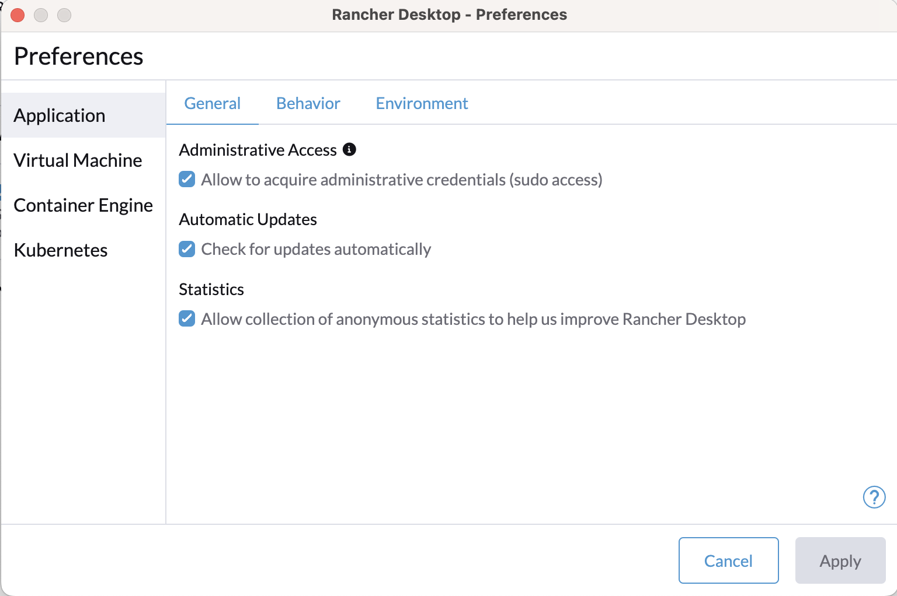

Development Environment On Mac

Ich bin kein professioneller Entwickler, ich mache es zum Spaß. Und ich spiele gerne herum, entdecke neue Technologien und entwickle allerlei kleine Dinge. Manchmal brauche ich Python, manchmal React/Typescript, Java und mehr. Für jedes Entwicklungstool oder jede Sprache gibt es mehrere Möglichkeiten, wie man sie installiert und ihre Versionen verwaltet. Da ich dazu neige, Dinge zu vergessen wie "Wie habe ich Python auf diesem Rechner installiert?", ist dies eine Notiz an mein zukünftiges Ich, die mir sagt, wie ich jedes Entwicklungstool installiert habe.
Da sich die Art und Weise, wie bestimmte Pakete installiert werden, im Laufe der Zeit ändern kann, werde ich meinen Installationsentscheidungen Daten hinzufügen.
Xcode
Xcode ist das grundlegende Entwicklungstool auf dem Mac. Es enthält git und andere grundlegende Werkzeuge und Compiler.
Ich installiere es aus dem Apple App Store.
Terminal
Mein bevorzugtes Terminal ist iTerm2, und ich installiere es einfach von der Website. Siehe hier, wie ich es konfiguriere.
zsh shell
Auf einem neuen Mac mache ich Folgendes:
# Überprüfen, welche Shell ich habe
echo "$SHELL"
# Falls es nicht zsh ist, als Standard festlegen
chsh -s "$(which zsh)"
VSCode
... oder VSCode-insiders
Docker
Januar 2025: Ich bin von Docker Desktop zu Rancher Desktop gewechselt.
Installationshinweis: Die Apple Silicon-Version heruntergeladen, das DMG geöffnet und in mein Anwendungsverzeichnis kopiert. Das einzige Detail, das ich tun musste, war das Ankreuzen des Kästchens "Administrative Access" in den Einstellungen.

Registry: Ich verwende verschiedene Registries, wenn ich an verschiedenen Projekten arbeite.
Frage: Wie konfiguriere ich Docker so, dass es Images aus einer bestimmten Registry zieht?
Java
Dies sind die Optionen, die ich gesehen habe:
Januar 2025: Ich habe mich entschieden, SDK Man zu verwenden, da es auch Maven abdeckt.
Mini-Cheatsheet
sdk install java 17.0.12-jbrinstalliert diese spezifische Java-Versionsdk list javazeigt alle verfügbaren Java-Versionen (zum Installieren)- Um die installierten Java-Versionen aufzulisten:
sdk offline enable, damit werden nur lokal installierte Versionen aufgelistetsdk list javasdk offline disablesdk default java 21.0.6-amznsetzt diese Version als Standard Um eine Java-Version als Standard innerhalb eines Verzeichnisses festzulegen, siehe den Env-Befehl
Maven
Ich verwende einfach brew install maven. Für ältere Versionen installiert brew install maven30 Maven 3.0.
Gradle
Januar 2025: Ich entscheide mich, SDK Man auch für Gradle zu verwenden.
Grund: brew install gradle installierte Gradle Version 8.12.1, aber für das aktuelle Projekt benötigte ich 8.5.
sdk install gradle 8.5: Installiert die spezifische Gradle-Versionsdk use gradle 8.5
Node und npm
Januar 2025 Ich habe mich entschieden, nvm zu verwenden.
Mini-Cheatsheet
nvm use 16node -vzeigt die aktuell verwendete Versionnvm install 12installiert Node 12 und verwendet es
Python
- Sommer 2024: Ich verwende pyenv
- Um pyenv zu installieren:
brew install pyenv
Mini-Cheatsheet
Um eine mit Pyenv installierte Python-Version auszuwählen, führen Sie einen der folgenden Befehle aus:
pyenv install 3.12
pyenv shell <version> -- nur für die aktuelle Shell-Sitzung auswählen
pyenv local <version> -- automatisch auswählen, wenn Sie sich im aktuellen Verzeichnis (oder dessen Unterverzeichnissen) befinden
pyenv global <version> -- global für Ihr Benutzerkonto auswählen
Ruby
Noch nicht durchdacht. Vermeiden Sie Ruby im Allgemeinen... 😉